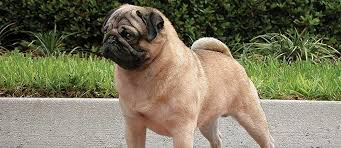

Overview
Once the mischievous companion of Chinese emperors, and later the mascot of Holland's royal House of Orange, the small but solid Pug is today adored by his millions of fans around the world. Pugs live to love and to be loved in return. The Pug's motto is the Latin phrase 'multum in parvo' (a lot in a little)'¿an apt description of this small but muscular breed. They come in three colors: silver or apricot-fawn with a black face mask, or all black. The large round head, the big, sparkling eyes, and the wrinkled brow give Pugs a range of human-like expressions'¿surprise, happiness, curiosity'¿that have delighted owners for centuries. Pug owners say their breed is the ideal house dog. Pugs are happy in the city or country, with kids or old folks, as an only pet or in a pack. They enjoy their food, and care must be taken to keep them trim.Pug, breed of toy dog that probably originated in China and was introduced to England near the end of the 17th century by Dutch traders. The Pug has a short muzzle and a tightly curled tail. It is a squarely built muscular dog with a large head, prominent dark eyes, and small drooping ears.
Characteristics
- He has an even and stable temperament, great charm, and an outgoing, loving disposition.
- Intelligent and trainable
- Their feelings are easily hurt
- Pug has a fine, glossy coat that comes in a variety of colors.
Care
Pugs aren't high-energy dogs, but they still need daily exercise. They also require consistent training and socialization to make sure they are well-mannered. And their grooming needs are fairly straightforward.Pugs need a moderate amount of exercise, roughly around an hour per day. A morning and evening walk plus some active playtime should be sufficient. Pugs also love participating with their humans in dog sports, such as agility and rally. And they enjoy puzzle toys to challenge them physically and mentally. The pug’s short coat is fairly easy to care for, only requiring basic grooming. Plan to brush weekly to remove loose fur and distribute skin oils. And bathe roughly once a month, depending on how dirty your dog gets. But at least weekly plan to use a soft damp cloth to clean the pug’s skin folds, especially around its face, as they are prone to infection. Make sure to dry the folds thoroughly.